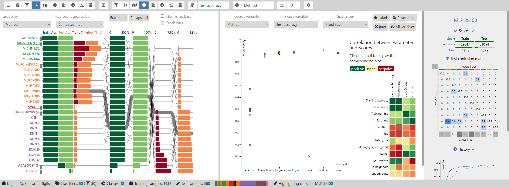
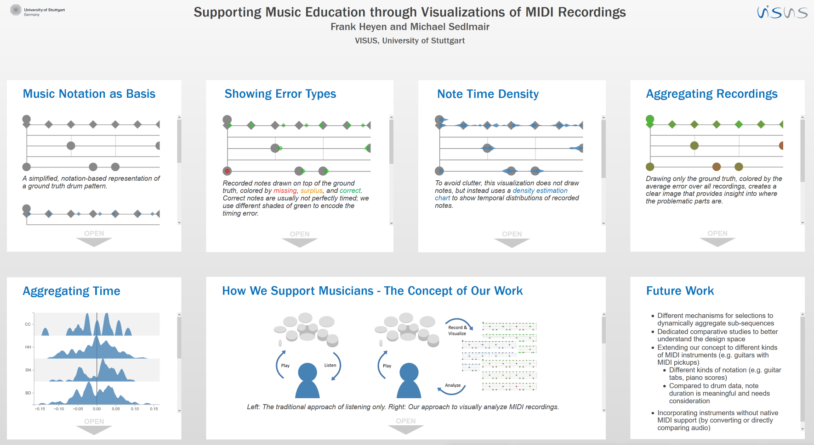
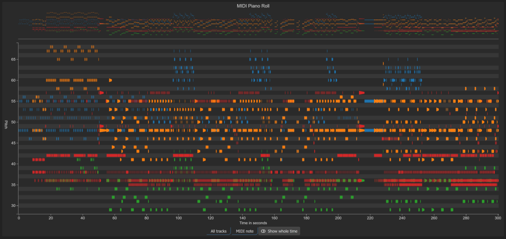

Publications
ClaVis: An Interactive Visual Comparison System for Classifiers
We propose ClaVis, a visual analytics system for comparative analysis of classification models. ClaVis allows users to visually compare the performance and behavior of tens to hundreds of classifiers trained with different hyperparameter configurations. Our approach is plugin-based and classifier-agnostic and allows users to add their own datasets and classifier implementations. It provides multiple visualizations, including a multivariate ranking, a similarity map, a scatterplot that reveals correlations between parameters and scores, and a training history chart. We demonstrate the effectivity of our approach in multiple case studies for training classification models in the domain of natural language processing.
Supporting Music Education through Visualizations of MIDI Recordings
Musicians mostly have to rely on their ears when they want to analyze what they play, for example to detect errors. Since hearing is sequential, it is not possible to quickly grasp an overview over one or multiple recordings of a whole piece of music at once. We therefore propose various visualizations that allow analyzing errors and stylistic variance. Our current approach focuses on rhythm and uses MIDI data for simplicity.
More to come!
Projects
MIDI Piano Roll
Displays a MIDI file as a piano roll visualization in the browser.
MIDI Live Vis
Displays MIDI input from an instrument as a piano roll using the WebMIDI API.